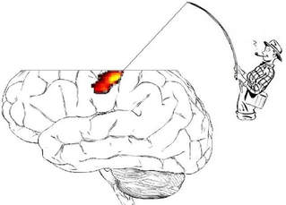

|
GUEST POST BY CHRIS CHAMBERS Professor Chris Chambers, Cardiff University The biomedical sciences are facing a rising tide of concerns about transparency and reproducibility. Among the chief concerns are inadequate sample sizes, lack of sufficient detail in published method sections to enable replication, lack of direct replication itself (and notable failures when attempted), selective reporting of statistical analyses in order to generate desirable outcomes, suppression of negative results, lack of sharing of materials and data, and the presentation of exploratory outcomes as though they were hypothesis-driven. Collectively these problems threaten the reliability of biomedical science, theory generation, and the ability for basic science to be translated into clinical applications and other settings. Human neuroimaging in many ways represents a perfect storm of these weaknesses, exacerbated by the fact that two of the main techniques, MRI and MEG, are extremely expensive compared with adjacent fields. Researchers using these methods face tremendous pressure to produce clear, positive, publishable results, usually in small samples. Until recently such issues were rarely discussed openly, perhaps for fear that it would bring a relatively embryonic discipline into disrepute and collapse funding opportunities. But they have been simmering below the surface for a long time. Years before irreproducibility was headline news, at one imaging centre where I worked we noticed that we were running out of data storage faster than we were acquiring new data. After some detective work we learned why. Researchers were repeatedly analysing and reanalysing the same datasets, and with every reanalysis they were inadvertently duplicating huge quantities of raw data. The incident was illuminating about normative research practices. Data fishing in brain mapping (Image credit: Neuroskeptic) When I raise this scenario with colleagues, their typical response is “Well, duplication of raw data is a silly mistake but most fMRI research is exploratory and exploration is vital for science”. This is true, of course. There is a huge amount to gain from performing reanalysis of existing, complex datasets. But the key, then, is whether such exploratory research is documented transparently as exploration. In an exploratory field, and especially one that often relies on inferential statistics, shouldn’t publications faithfully report all analyses that were attempted before settling on the ones that drove the conclusions? And does this happen in fMRI? Of course it doesn’t. Pick up a copy of any neuroimaging or cognitive neuroscience journal and you’ll find article after article purporting to test hypotheses using complex analyses, each of which is presented as though it was planned in advance. Given the pressures on researchers to produce clean results and frame them as the outcomes of hypothesis testing, it comes as no surprise that virtually no two published fMRI studies report the same analysis pipeline.
There are many solutions to this quagmire, including greater sharing of data, materials and code, and I also believe one major piece of the puzzle is preregistration of hypotheses and analysis plans. Many in the neuroimaging community are skeptical of preregistration and what it might say about our scientific approach, which sits uncomfortably between confirmatory and exploratory modes and relies on massive investment to remain afloat. When your typical experiment involves hundreds of analytic decisions, each of which can be considered “legal” yet produce slightly different outcomes, there is a natural tendency to fear that pre-specification of any particular route through the garden of forking paths will lead to unpublishable, possibly confusing findings. We thus feel pressured to apply the “human element” to bring order to chaos. Researchers will routinely spend months poring over their data and analyses using sophisticated statistical methods but almost none appreciate the risks of their own biases in interpreting one outcome among hundreds or thousands of possibilities. This is why I have pushed hard for neuroimaging journals to offer Registered Reports (RRs). The RR format eliminates the fear of preregistration producing unpublishable results because, for RRs, the editorial decision is made before the results are known. Detailed study protocols are reviewed before researchers commence the research, and following detailed review of the theory and methods, the highest quality submissions are accepted for later publication regardless of how the results turn out. Researchers can also report additional exploratory (unregistered) analyses, clearly flagged as exploratory, and are encouraged to include preliminary experiments to validate a proposed analysis pipeline. This week sees the launch of Registered Reports as a new article option at NeuroImage as part of a two-year pilot initiative, co-edited by me, Birte Forstmann (University of Amsterdam), Rob Leech (Kings College London), Jeanette Mumford (University of Wisconsin-Madison), Kevin Murphy (Cardiff University) and Pia Rotshtein (University of Birmingham). In addition to the usual features of Registered Reports, we are also inviting proposals for secondary analyses of existing but unobserved datasets, innovative approaches using Bayesian adaptive optimisation to combine the strengths of exploratory and confirmatory science, and review/perspectives articles on the potential costs and benefits of preregistration in neuroimaging research. Submissions are invited in any area of human neuroimaging and readers can find detailed author guidelines here. Preregistration in neuroimaging is a high stakes intervention. The combination of high analytic flexibility combined with high risk of bias and high expense of data generation means that it has the potential to yield perhaps the greatest scientific benefits of any field to which it has been applied so far. But because of this methodological complexity, preregistration also brings some of the greatest challenges. One such challenge is power analysis. Many of the 103 journals that currently offer RRs require high prospective power to detect the smallest effect of theoretical interest (e.g. 0.9 at Cortex, 0.95 at Nature Human Behaviour), but we know that MRI in particular is underpowered to detect theoretically plausible effect sizes, and we also know that many researchers do not have the resources to fund large studies. At one level this problem can be solved by consortia projects. Initiatives such as the Psychological Science Accelerator, Study Swap and the ENIGMA neuroimaging consortium are blazing a trail to facilitate more definitive team-oriented science. However, the main benefit of RRs lies not in the support of big science but in the elimination of publication bias and selective reporting. Therefore, to make the format as accessible as possible to the neuroimaging community, the RR format at NeuroImage will not set a minimum required statistical power or sample size. Instead we will simply require authors to justify the sample size they are proposing. A bigger question is whether preregistration in neuroimaging is even feasible. To what extent will researchers feel able to prespecify their analysis pipelines in advance? For a RR, if an exact pipeline cannot be prespecified then researchers will be given the opportunity to prespecify data-dependent contingencies (e.g. if the data look like this, then we will apply this filter, etc.). They may also propose a blinded analysis strategy or an adaptive design in which some decisions will be post hoc, but actively protected from bias. Can such approaches succeed? I believe they can but for me the most fascinating outcome of this particular RR launch will be to discover how a community of talented analysts tackles this challenge. Chris Chambers is a professor of cognitive neuroscience at the Cardiff University Brain Research Imaging Centre and guest section editor for Registered Reports at NeuroImage
2 Comments
David Seminowicz
4/26/2018 05:27:57 am
I am generally in favor of registered reports and think this is a move in the right direction for the field. I wonder about a few things, though, which I'm sure you've thought about. First is additional reviewer burden, and second is whether journals with registered reports end up with all the null results. They're related in the following scenario: a paper is registered at NeuroImage and undergoes review, but then when the results come out and strongly support the hypotheses, the authors decide to send the manuscript to a "higher" journal. I don't know how common this scenario is or whether there are ways to prevent it - would love to hear your thoughts.
Chris Chambers
5/22/2018 02:20:49 am
Hi David Your comment will be posted after it is approved.
Leave a Reply. |
BLOG HOME
Archives
August 2023
|
 RSS Feed
RSS Feed